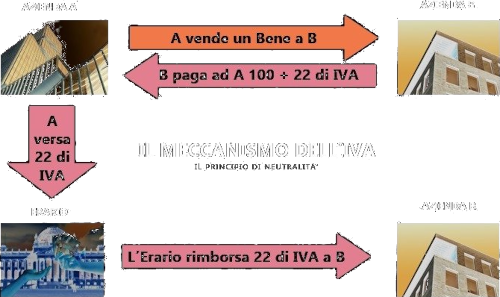
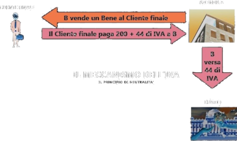

IVA, Imposta sul valore aggiunto
L'IVA - Imposta sul Valore Aggiunto - è un'imposta indiretta, ovvero un'imposta che non coplisce il reddito bensì il consumo. Tale imposta (sostituendo l'IGE, Imposta generale sulle entrate) è stata introdotta nell'ordinamento fiscale italiano con D.P.R. n. 633/1972 ed è entrata in vigore il 1° gennaio 1973, al fine di adeguare il sistema tributario italiano a quello degli altri Stati membri della Comunità Europea.
L'imposta colpisce l'aumento di valore che un bene subisce ad ogni passaggio, per evoluzione del procedimento produttivo che lo concerne o per effetto delle leggi di mercato, e colpisce, altresì, le prestazioni di servizi fornite contro un corrispettivo: ma, in entrambi i casi, con l'applicazione di un meccanismo che conduce a colpire in pratica soltanto il consumatore o utente finale, in quanto nei passaggi intermedi l'IVA viene pagata e poi recuperata, con risultati neutri per i soggetti diversi dal consumatore o utente finale.
Con l'acronimo IVA ci si riferisce all'imposta sul valore aggiunto che tassa il valore aggiunto ad ogni fase della produzione, scambio di beni e servizi ed è presente in oltre 60 paesi. Con il termine valore aggiunto ci si riferisce alla differenza tra il prezzo di vendita di un dato prodotto (bene o servizio) e il costo delle materie prime, ausiliarie e servizi utilizzati per la sua produzione. Esso rappresenta il valore aggiunto dall'impresa grazie all'intervento dei fattori produttivi di capitale e lavoro.
L'imposta è pertanto neutra in tutti i passaggi intermedi, quanto alla sua sopportazione, anche se non esclude alcuni obblighi di adempimento formale per i protagonisti di tali passaggi intermedi.
Il presupposto dell’IVA è quello di colpire solo l'incremento di valore che un bene o un servizio acquista ad ogni passaggio economico (il valore aggiunto), a partire dalla produzione fino al cliente finale.
Ai sensi dell'art. 1 del D.P.R. 26 ottobre 1972, n. 633, affinché un’operazione sia assoggettata ad IVA devono sussistere tre condizioni:
Ci si deve trovare di fronte ad una cessione di beni o una prestazione di servizi (presupposto oggettivo);
L’operazione di cui sopra deve svolgersi nell’esercizio di impresa, arte e professioni (presupposto soggettivo). Le vendite tra privati non sono assoggettate all’IVA.
Tali operazioni devono essere effettuate nel territorio dello Stato (presupposto territoriale).
Una delle critiche maggiori che vengono indirizzate all’IVA è quella di gravare interamente sul consumatore finale che non può esercitare il diritto alla detrazione. Il soggetto passivo dell’imposta invece, l’imprenditore, attraverso un sistema di detrazione e rivalsa resta neutrale. Pertanto il contribuente di fatto (consumatore finale), anche se non è il soggetto passivo dell'imposta ne sopporta l'onere economico mentre il contribuente di diritto che è il soggetto passivo d'imposta rimane neutrale.
Attraverso un sistema di detrazione e rivalsa, l'imposta grava sul consumatore finale, invece per il soggetto passivo d'imposta – (l'imprenditore o professionista) – l'IVA resta neutrale. Il soggetto passivo d'imposta, cioè colui che cede beni o servizi, detrae l'imposta pagata sugli acquisti di beni e servizi effettuati nell'esercizio d'impresa, arte o professione, dall'imposta addebitata (a titolo di rivalsa) agli acquirenti dei beni o dei servizi prestati. L'IVA pertanto rappresenta un costo solo per i soggetti che non possono esercitare il diritto alla detrazione e quindi, in generale, per i consumatori finali. Nell'applicazione dell'imposta sul valore aggiunto occorre quindi distinguere il contribuente di fatto (il consumatore finale), che pur non essendo soggetto passivo dell'imposta ne sopporta l'onere economico e il contribuente di diritto (di norma un imprenditore o un professionista) su cui gravano gli obblighi del soggetto passivo d'imposta, sebbene per lui l'imposta resti neutrale.
L’IVA in Italia:
L’aliquota IVA in Italia è pari al 21% ma esistono beni e servizi in cui viene applicata una aliquota agevolata:
10% per alberghi, bar, ristoranti e altri prodotti turistici, determinati prodotti alimentari e particolari opere di recupero edilizio.
4% per generi alimentari di prima necessità, stampa quotidiana o periodica ed i libri, opere per l'abbattimento delle barriere architettoniche.
Come funziona l’IVA per le aziende
Il meccanismo dell’IVA vede il coinvolgimento di tre categorie di soggetti:
i fornitori;
i clienti;
l’Erario.
Il fornitore deve addebitare al cliente l’IVA, proporzionale al corrispettivo contrattuale (nella norma il 22%), e provvede a versarlo all’Erario al netto del tributo da lui corrisposto ai propri fornitori.
L’IVA corrisposta ai fornitori di beni e servizi acquistati nell’esercizio di imprese, arti o professioni può essere detratta dall’IVA sulle operazioni attive, col diritto al rimborso di eventuali eccedenze.
Esempio. Ipotizziamo che l’azienda A venda un prodotto al prezzo di 122 euro (100 euro + 22 euro di iva) all’azienda B.
L’azienda A incassa 122 euro dall’azienda B e versa 22 euro all’Erario.
L’azienda B che ha pagato 122 all’azienda A chiede e ottiene il rimborso di 22 dall’Erario (il rimborso avviene per lo più tramite compensazione dell’IVA che a propria volta l’azienda B dovrà pagare; ma questo è un concetto che svilupperemo tra poco).
Per ora, come vedi, il tutto è un gioco a somma 0 sia per l’Erario (che incassa 22 euro da A e rimborsa 22 euro a B) che per l’azienda A (che avrà un incasso netto di 100 euro) che per l’azienda B (che avrà un pagamento netto di 100 euro).
L’azienda B vende un prodotto al consumatore finale al prezzo di 244 euro (200 euro + 44 euro di iva).
L’azienda B incassa 244 dal consumatore finale e versa 44 euro all’Erario.
Dopo questo ciclo, l’unico che ha pagato veramente l’iva è stato il consumatore finale (44 euro), in quanto per l’azienda A e per l’azienda B l’IVA è stata trasparente in quanto:
Se hanno incassato l’IVA l’hanno dovuta poi pagare all’Erario;
Se hanno pagato l’IVA l’hanno poi incassata dall’Erario;
Dal punto di vista dell’Erario, questo ha incassato IVA netta per 44 euro. Infatti, nei vari passaggi, ha incassato 22 euro di IVA da A, rimborsato 22 euro di IVA a B e poi ha incassato 44 euro di IVA da B quanto quest’ultimo ha venduto il prodotto al consumatore finale.
Dunque, cos’è l’IVA? l’IVA, detta anche imposta sul valore aggiunto, è una imposta che paga il consumatore finale sui beni acquistati e che l’Erario incassa attraverso le aziende.
ATTENZIONE: nella pratica ogni soggetto IVA (nel nostro esempio l’Azienda B) è allo stesso tempo cliente e fornitore di qualcun altro e pertanto registrerà nella propria contabilità operazioni che saranno sia a credito di IVA (nel caso operi come committente di servizi) sia a debito di IVA (nel caso operi come prestatore di servizi). Periodicamente (più avanti in questo documento vedremo i dettagli) ogni soggetto è tenuto:
Se a debito netto di IVA a versare il dovuto;
Se a credito netto di IVA a riportare tale credito nel periodo successivo oppure chiedere il rimborso all’Erario.